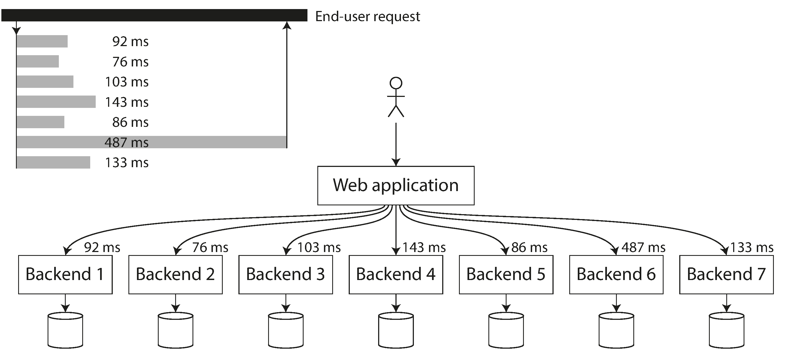

The average tells you nothing about the typical person's experience. Same
problem with response times!
Percentiles: p50, p95, p99, p99.9
Median (p50): Half of requests faster, half slower. The "typical" experience.
High percentiles (tail latencies):
p95: 95% of requests are faster than this
p99: 99% of requests are faster than this
p99.9: 99.9% of requests are faster than this
Average (mean) is not a good metric — it doesn't tell you how
many users experienced that delay.
Why p99.9 Matters: The Amazon Effect
Amazon measures requirements at the 99.9th percentile.
Why? Customers with slowest requests often have the most data = most
valuable customers.
1%
Sales drop per 100ms slower
16%
Satisfaction drop per 1s slower
p99.99?
Too expensive, diminishing returns
Optimizing the 99.99th percentile was deemed not worth the
effort for Amazon.
Tail Latency Amplification
One end-user request may call multiple backend services in parallel.
The end-user must wait for the slowest call.
Even if only a small % of backend calls are slow, more calls =
higher chance of hitting a slow one.

Head-of-Line Blocking
A server can only process a limited number of things in parallel.
A few slow requests can hold up subsequent requests in the
queue.
Even if subsequent requests are fast to process, clients see slow response
times due to queueing delays.
Important: Measure response times on the client
side.
SLOs and SLAs
Service Level Objectives (SLOs) and Service Level Agreements (SLAs)
define expected performance.
Example SLA:
Median response time < 200ms
99th percentile < 1 second
Service up 99.9% of the time
If SLA is not met, customers may demand a refund.
Percentiles in Practice
Calculate percentiles efficiently with algorithms like:
Forward decay
t-digest
HdrHistogram
Warning: Averaging percentiles is mathematically
meaningless!
The right way: aggregate the histograms, then calculate
percentiles.
Approaches for Coping with Load
Scaling Up (Vertical)
Move to a more powerful machine.
✅ Simple
❌ Expensive, hits ceiling
Scaling Out (Horizontal)
Distribute load across multiple machines.
✅ No ceiling
❌ More complex
In reality, good architectures use a pragmatic mix of both.
Elastic vs Manual Scaling
Elastic systems: Automatically add resources when load increases.
Useful for highly unpredictable load
Manual scaling: Humans analyze capacity and decide to add
machines.
Simpler, fewer operational surprises
Stateful vs Stateless Services
Stateless services: Easy to distribute across machines.
Stateful data systems: Much more complex to distribute.
Common wisdom: Keep your database on a single node until scaling cost or
high-availability forces you to distribute.
This is changing as distributed system tools improve.
No Magic Scaling Sauce
Large-scale architectures are highly specific to the application.
The problem may be:
Volume of reads or writes
Volume of data to store
Complexity of data
Response time requirements
Access patterns
A system for 100k req/sec (1KB each) looks very different from 3 req/min (2GB
each).
Maintainability
Making life better for engineering and
operations teams
The Cost of Maintenance
The majority of software cost is not initial development.
Ongoing maintenance includes:
Fixing bugs
Keeping systems operational
Investigating failures
Adapting to new platforms
Repaying technical debt
Adding new features
Three Design Principles
1. Operability
Make it easy for ops to keep the system running.
2. Simplicity
Make it easy for new engineers to understand.
3. Evolvability
Make it easy to adapt for future requirements.
Operability: Life Easy for Ops
"Good operations can work around bad software, but good software cannot run reliably with
bad operations."
Good operability means:
Good monitoring & visibility into runtime behavior
Support for automation and standard tools
Avoiding dependency on individual machines
Good documentation and operational model
Good defaults with ability to override
Self-healing with manual control when needed
Predictable behavior, minimizing surprises
Simplicity: Managing Complexity
Symptoms of complexity:
Explosion of state space
Tight coupling of modules
Tangled dependencies
Inconsistent naming
Performance hacks everywhere
Accidental complexity: Not inherent in the problem, arises
from implementation.
Best tool: Good abstractions that hide
implementation details.
Evolvability: Making Change Easy
Requirements will change. Count on it.
New facts are learned
Unanticipated use cases emerge
Business priorities shift
Platforms change
Legal/regulatory requirements change
Closely linked to simplicity: simple systems are easier to
modify.
Also called: extensibility, modifiability, plasticity.
Summary
Chapter 1 Summary
Reliability: Make systems work correctly even when faults occur (hardware, software,
human). Use fault-tolerance techniques.
Scalability: Describe load (load parameters), measure
performance (percentiles), and build strategies to handle growth.
Maintainability: Focus on Operability, Simplicity, and
Evolvability. Good abstractions reduce complexity.
No easy fixes — but patterns and techniques reappear across
different applications. That's what the rest of the book covers.
Questions?
Designing Data-Intensive Applications • Chapter 1
MCQ Quiz
100 Questions • Test Your Knowledge
Q1Data-Intensive Apps
What is usually the limiting factor for data-intensive applications?
A) Network bandwidth alone
B) Raw CPU power
C) Number of programming languages used
D) The amount, complexity, and speed of change of data
Answer: D) The chapter states: "Raw CPU power is rarely a limiting factor for these applications—bigger problems are usually the amount of data, the complexity of data, and the speed at which it is changing."
Q2Building Blocks
Which of the following is NOT listed as a standard building block of data-intensive applications?
A) Batch processing
B) Load balancers
C) Databases
D) Caches
Answer: B) The five listed building blocks are: databases, caches, search indexes, stream processing, and batch processing. Load balancers are not in the list.
Q3Blurring Boundaries
Which datastore is mentioned as being used as a message queue?
A) PostgreSQL
B) Elasticsearch
C) Redis
D) MongoDB
Answer: C) "There are datastores that are also used as message queues (Redis), and there are message queues with database-like durability guarantees (Apache Kafka)."
Q4Blurring Boundaries
Apache Kafka is described as a message queue with what special property?
A) Database-like durability guarantees
B) Built-in machine learning
C) In-memory caching
D) Automatic schema validation
Answer: A) "There are message queues with database-like durability guarantees (Apache Kafka). The boundaries between the categories are becoming blurred."
Q5Composite Data Systems
When combining several tools to provide a service, the developer becomes not just an application developer but also a what?
A) Network engineer
B) Data system designer
C) Security specialist
D) Database administrator
Answer: B) "You have essentially created a new, special-purpose data system from smaller, general-purpose components... You are now not only an application developer, but also a data system designer."
Q6Three Concerns
What are the three main concerns for most software systems discussed in Chapter 1?
A) Reliability, Scalability, Maintainability
B) Speed, Storage, Simplicity
C) Availability, Consistency, Partition tolerance
D) Security, Performance, Usability
Answer: A) "In this book, we focus on three concerns that are important in most software systems: Reliability, Scalability, and Maintainability."
Q7Composite Data Systems
What is the role of the API in a composite data system?
A) To replace the database entirely
B) To hide implementation details from clients
C) To expose all implementation details to clients
D) To provide direct access to each internal tool
Answer: B) "The service's interface or application programming interface (API) usually hides those implementation details from clients."
Q8Data-Intensive Apps
Why do many applications need to combine multiple specialized tools?
A) Because a single tool can no longer meet all data processing and storage needs
B) To use more programming languages
C) To increase complexity
D) To satisfy regulatory requirements
Answer: A) "Increasingly many applications now have such demanding or wide-ranging requirements that a single tool can no longer meet all of its data processing and storage needs."
Q9Building Blocks
What is the purpose of a cache in a data-intensive application?
A) To permanently store data
B) To send messages between processes
C) To remember the result of an expensive operation and speed up reads
D) To filter data by keyword
Answer: C) The chapter lists caches as: "Remember the result of an expensive operation, to speed up reads."
Q10Building Blocks
Stream processing in data-intensive applications is used to:
A) Send messages to another process for asynchronous handling
B) Build search indexes
C) Store data permanently
D) Crunch large accumulated datasets
Answer: A) The chapter lists stream processing as: "Send a message to another process, to be handled asynchronously."
Q11Reliability
What does reliability mean in the context of software systems?
A) The system runs on expensive hardware
B) Continuing to work correctly, even when things go wrong
C) The system is always the fastest possible
D) The system never has any bugs
Answer: B) "If all those things together mean 'working correctly,' then we can understand reliability as meaning, roughly, 'continuing to work correctly, even when things go wrong.'"
Q12Faults vs Failures
What is the difference between a fault and a failure?
A) A fault only applies to hardware
B) A failure is less severe than a fault
C) A fault is one component deviating from spec; a failure is the whole system stopping service
D) They are the same thing
Answer: C) "A fault is usually defined as one component of the system deviating from its spec, whereas a failure is when the system as a whole stops providing the required service to the user."
Q13Fault Tolerance
What is the goal of fault-tolerant systems?
A) To increase system complexity
B) To make systems cheaper
C) To eliminate all faults completely
D) To prevent faults from causing failures
Answer: D) "It is impossible to reduce the probability of a fault to zero; therefore it is usually best to design fault-tolerance mechanisms that prevent faults from causing failures."
Q14Chaos Monkey
What is Netflix's Chaos Monkey?
A) A database replication tool
B) A load balancer
C) A monitoring dashboard
D) A tool that randomly kills processes in production to test fault tolerance
Answer: D) "By deliberately inducing faults, you ensure that the fault-tolerance machinery is continually exercised and tested. The Netflix Chaos Monkey is an example of this approach."
Q15Chaos Monkey
Why do many critical bugs come from poor error handling?
A) Because error handling code is never tested in normal operation
B) Because developers don't use try-catch blocks
C) Because compilers don't check error handling
D) Because error handling is optional
Answer: A) "Many critical bugs are actually due to poor error handling; by deliberately inducing faults, you ensure that the fault-tolerance machinery is continually exercised and tested."
Q16Hardware Faults
What is the reported MTTF (mean time to failure) for hard disks?
A) About 1 year
B) 1 to 5 years
C) About 100 years
D) About 10 to 50 years
Answer: D) "Hard disks are reported as having a mean time to failure (MTTF) of about 10 to 50 years."
Q17Hardware Faults
With 10,000 disks in a storage cluster, how often should you expect a disk to die?
A) About one per month
B) About one per hour
C) About one per day
D) About one per week
Answer: C) "On a storage cluster with 10,000 disks, we should expect on average one disk to die per day."
Q18Hardware Redundancy
Which of the following is NOT mentioned as a hardware redundancy technique?
A) Dual power supplies
B) Redundant application code
C) RAID configuration
D) Hot-swappable CPUs
Answer: B) The chapter mentions RAID, dual power supplies, hot-swappable CPUs, and batteries/diesel generators. Redundant application code is a software technique, not hardware.
Q19Software Fault Tolerance
Why has there been a shift toward software fault-tolerance techniques?
A) Regulations require it
B) Software is cheaper to write
C) Cloud platforms prioritize flexibility over single-machine reliability, and more machines means more hardware faults
D) Hardware became more reliable
Answer: C) "In some cloud platforms such as AWS it is fairly common for virtual machine instances to become unavailable without warning, as the platforms are designed to prioritize flexibility and elasticity over single-machine reliability."
Q20Rolling Upgrades
What operational advantage do systems tolerant of machine failure provide?
A) Faster query processing
B) Can be patched one node at a time without downtime (rolling upgrade)
C) Lower hardware costs
D) Automatic schema migration
Answer: B) "A system that can tolerate machine failure can be patched one node at a time, without downtime of the entire system (a rolling upgrade)."
Q21Software Errors
How do software faults differ from hardware faults?
A) Software faults are random and independent
B) Software faults are less dangerous
C) Software faults only affect memory
D) Software faults are systematic, correlated across nodes, and harder to anticipate
Answer: D) "Such faults are harder to anticipate, and because they are correlated across nodes, they tend to cause many more system failures than uncorrelated hardware faults."
Q22Software Errors
What happened on June 30, 2012 that caused many applications to hang simultaneously?
A) A major power outage
B) An internet cable was cut
C) A DNS server failure
D) A leap second triggered a bug in the Linux kernel
Answer: D) "Consider the leap second on June 30, 2012, that caused many applications to hang simultaneously due to a bug in the Linux kernel."
Q23Software Errors
What is a cascading failure?
A) A small fault in one component triggers faults in others, which trigger more
B) A hardware failure that corrupts data
C) A planned maintenance event
D) A failure that only affects one component
Answer: A) "Cascading failures, where a small fault in one component triggers a fault in another component, which in turn triggers further faults."
Q24Software Errors
What characteristic do bugs causing software faults often have?
A) They only affect new code
B) They are always caught by unit tests
C) They are immediately visible
D) They lie dormant until triggered by unusual circumstances
Answer: D) "The bugs that cause these kinds of software faults often lie dormant for a long time until they are triggered by an unusual set of circumstances."
Q25Human Errors
According to a study cited in the chapter, what is the leading cause of outages in large internet services?
A) Configuration errors by operators
B) Hardware faults
C) Network failures
D) Software bugs
Answer: A) "One study of large internet services found that configuration errors by operators were the leading cause of outages, whereas hardware faults (servers or network) played a role in only 10–25% of outages."
Q26Human Errors
What percentage of outages are caused by hardware faults according to the study?
A) 10-25%
B) Over 90%
C) 50-75%
D) Less than 5%
Answer: A) "Hardware faults (servers or network) played a role in only 10–25% of outages."
Q27Human Errors
Which of the following is NOT mentioned as a way to mitigate human errors?
A) Quick recovery mechanisms like fast rollbacks
B) Replacing all humans with AI
C) Sandbox environments for safe experimentation
D) Well-designed APIs that make the right thing easy
Answer: B) The chapter lists: design for safety, sandbox environments, thorough testing, quick recovery, monitoring/telemetry, and training. Replacing humans with AI is not mentioned.
Q28Human Errors
What are canary releases used for?
A) Rolling out new code gradually so bugs affect only a small subset of users
B) Encrypting data at rest
C) Testing hardware redundancy
D) Monitoring network traffic
Answer: A) "Make it fast to roll back configuration changes, roll out new code gradually (so that any unexpected bugs affect only a small subset of users)."
Q29Reliability Importance
The chapter uses the example of a parent storing photos of their children to illustrate what point?
A) That photos should be stored in the cloud
B) That even noncritical applications have a responsibility to users for reliability
C) That photo apps need special databases
D) That backups are unnecessary
Answer: B) "Consider a parent who stores all their pictures and videos of their children in your photo application. How would they feel if that database was suddenly corrupted?"
Q30Reliability Importance
When is it acceptable to sacrifice reliability according to the chapter?
A) Never
B) When developing a prototype for an unproven market or for narrow profit margin services, but be conscious of it
C) Whenever it saves money
D) Only for internal tools
Answer: B) "There are situations in which we may choose to sacrifice reliability in order to reduce development cost... but we should be very conscious of when we are cutting corners."
Q31Scalability
Why is it meaningless to say 'X is scalable' or 'Y doesn't scale'?
A) Because scalability only matters for large companies
B) Because all systems scale equally
C) Because scalability is subjective
D) Because scalability is not a one-dimensional label; it's about specific growth questions
Answer: D) "It is not a one-dimensional label that we can attach to a system: it is meaningless to say 'X is scalable' or 'Y doesn't scale.' Rather, discussing scalability means considering questions like 'If the system grows in a particular way, what are our options for coping with the growth?'"
Q32Load Parameters
What are load parameters?
A) Hardware specifications of the server
B) Configuration settings for caching
C) The maximum capacity of a database
D) Numbers that describe the current load on the system (e.g., RPS, read/write ratio)
Answer: D) "Load can be described with a few numbers which we call load parameters. The best choice of parameters depends on the architecture of your system."
Q33Twitter Case Study
What was Twitter's peak rate for posting tweets (as of 2012)?
A) 4,600 requests/sec
B) Over 12,000 requests/sec
C) 300,000 requests/sec
D) 1,000 requests/sec
Answer: B) "A user can publish a new message to their followers (4.6k requests/sec on average, over 12k requests/sec at peak)."
Q34Twitter Case Study
What was the rate of home timeline reads at Twitter?
A) 4,600 per second
B) 1 million per second
C) 12,000 per second
D) 300,000 per second
Answer: D) "A user can view tweets posted by the people they follow (300k requests/sec)."
Q35Fan-out
What is fan-out in the context of Twitter's architecture?
A) The number of requests to other services needed to serve one incoming request
B) The total number of users
C) The number of tweets a user posts
D) The database replication factor
Answer: A) "Fan-out: The number of requests to other services needed to serve one incoming request."
Q36Twitter Approach 1
What was the problem with Twitter's first approach (query on read)?
A) With 300k timeline reads/sec, the database couldn't keep up with the expensive join queries
B) It used too much memory
C) It didn't support hashtags
D) Writes were too slow
Answer: A) The first approach inserted tweets into a global collection and used a SQL JOIN to build timelines on read, but the read load was too heavy.
Q37Twitter Approach 2
In Twitter's second approach, what happens when a user posts a tweet?
A) The tweet is inserted into all followers' home timeline caches
B) The tweet is stored only in a global table
C) The tweet is discarded after 24 hours
D) The tweet is compressed and archived
Answer: A) "Maintain a cache for each user's home timeline—like a mailbox... When a user posts a tweet, look up all the people who follow that user, and insert the new tweet into each of their home timeline caches."
Q38Twitter Approach 2
On average, how many writes to home timeline caches does a single tweet generate?
A) 75 writes
B) 30 million writes
C) 345,000 writes per second across all tweets (75 followers × 4.6k tweets/sec)
D) 1,000 writes
Answer: C) "On average, a tweet is delivered to about 75 followers, so 4.6k tweets per second become 345k writes per second to the home timeline caches."
Q39Twitter Celebrities
Why did celebrities with 30M+ followers cause problems for Twitter's second approach?
A) A single tweet could require over 30 million writes to home timeline caches
B) Their tweets were too long
C) Their accounts used too much storage
D) They posted too frequently
Answer: A) "Some users have over 30 million followers. This means that a single tweet may result in over 30 million writes to home timelines!"
Q40Twitter Hybrid
What hybrid solution did Twitter ultimately adopt?
A) Use a completely different database
B) Only query on read
C) Only pre-compute timelines
D) Fan-out for most users, but fetch-on-read for celebrities with many followers
Answer: D) "Most users' tweets continue to be fanned out to home timelines at the time when they are posted, but a small number of users with a very large number of followers (i.e., celebrities) are excepted from this fan-out."
Q41Describing Performance
In a batch processing system like Hadoop, what metric is usually most important?
A) Availability
B) Throughput
C) Response time
D) Latency
Answer: B) "In a batch processing system such as Hadoop, we usually care about throughput—the number of records we can process per second, or the total time it takes to run a job on a dataset of a certain size."
Q42Latency vs Response Time
What is the difference between latency and response time?
A) Latency includes network delays; response time does not
B) Response time is what the client sees (includes network + queueing); latency is the time a request waits to be handled
C) They are the same thing
D) Response time is always lower than latency
Answer: B) "The response time is what the client sees: besides the actual time to process the request (the service time), it includes network delays and queueing delays. Latency is the duration that a request is waiting to be handled—during which it is latent, awaiting service."
Q43Response Time Distribution
Why should response time be thought of as a distribution rather than a single number?
A) Because only averages matter
B) Because even the same request gives different response times due to context switches, GC pauses, retransmissions, etc.
C) Because response times are always constant
D) Because databases round response times
Answer: B) "Even if you only make the same request over and over again, you'll get a slightly different response time on every try... random additional latency could be introduced by a context switch, the loss of a network packet and TCP retransmission, a garbage collection pause, a page fault..."
Q44Percentiles
What does the median (p50) response time tell you?
A) The minimum response time
B) The worst-case response time
C) The average of all response times
D) Half of requests are faster and half are slower than this value
Answer: D) "The median is the halfway point: for example, if your median response time is 200 ms, that means half your requests return in less than 200 ms, and half your requests take longer than that."
Q45Percentiles
Why is the arithmetic mean not a good metric for response times?
A) It doesn't tell you how many users actually experienced that delay
B) It's too difficult to calculate
C) It requires too much data
D) It's always too low
Answer: A) "The mean is not a very good metric if you want to know your 'typical' response time, because it doesn't tell you how many users actually experienced that delay."
Q46Tail Latencies
Why does Amazon measure response time requirements at the 99.9th percentile?
A) It's cheaper to optimize
B) It's an industry standard
C) 99.9% is a marketing number
D) Customers with the slowest requests often have the most data—they're the most valuable customers
Answer: D) "The customers with the slowest requests are often those who have the most data on their accounts because they have made many purchases—that is, they're the most valuable customers."
Q47Tail Latencies
According to Amazon, a 100ms increase in response time results in what?
A) A 1-second slowdown
B) A 10% drop in sales
C) No measurable impact
D) A 1% drop in sales
Answer: D) "Amazon has also observed that a 100 ms increase in response time reduces sales by 1%."
Q48SLOs and SLAs
What can happen if an SLA is not met?
A) The service is automatically shut down
B) Customers may demand a refund
C) Nothing
D) The system scales automatically
Answer: B) "These metrics set expectations for clients of the service and allow customers to demand a refund if the SLA is not met."
Q49Head-of-Line Blocking
What is head-of-line blocking?
A) When a database index is missing
B) When the first server in a cluster fails
C) When a few slow requests hold up processing of subsequent requests in the queue
D) When DNS resolution is slow
Answer: C) "It only takes a small number of slow requests to hold up the processing of subsequent requests—an effect sometimes known as head-of-line blocking."
Q50Tail Latency Amplification
What is tail latency amplification?
A) When tail latencies decrease over time
B) When the fastest calls determine overall performance
C) When backend services run out of memory
D) When a single slow backend call makes the entire end-user request slow, and the probability increases with multiple parallel calls
Answer: D) "It takes just one slow call to make the entire end-user request slow... Even if only a small percentage of backend calls are slow, the chance of getting a slow call increases if an end-user request requires multiple backend calls."
Q51Percentiles in Practice
Why is averaging percentiles mathematically meaningless?
A) Because percentiles only work for small datasets
B) Because the right way to aggregate response time data is to add the histograms, not average the percentiles
C) Because averages are always better
D) Because percentiles can't be added
Answer: B) "Averaging percentiles, e.g., to reduce the time resolution or to combine data from several machines, is mathematically meaningless—the right way of aggregating response time data is to add the histograms."
Q52Percentiles in Practice
Which algorithms are mentioned for efficiently calculating percentiles?
A) Forward decay, t-digest, and HdrHistogram
B) MapReduce and Spark
C) Binary search and hash tables
D) Quicksort and mergesort
Answer: A) "There are algorithms that can calculate a good approximation of percentiles at minimal CPU and memory cost, such as forward decay, t-digest, or HdrHistogram."
Q53Percentiles in Practice
Why should response times be measured on the client side?
A) Because servers don't track time
B) Because it's simpler to implement
C) Because client clocks are more accurate
D) Because queueing delays (head-of-line blocking) are only visible from the client's perspective
Answer: D) "Due to this effect, it is important to measure response times on the client side."
Q54Scaling Up vs Out
What is vertical scaling?
A) Distributing load across multiple smaller machines
B) Adding more network switches
C) Using a content delivery network
D) Moving to a more powerful single machine
Answer: D) "People often talk of a dichotomy between scaling up (vertical scaling, moving to a more powerful machine) and scaling out (horizontal scaling, distributing the load across multiple smaller machines)."
Q55Scaling Out
What is another name for horizontal scaling?
A) Monolithic architecture
B) Shared-everything architecture
C) Microservices architecture
D) Shared-nothing architecture
Answer: D) "Distributing load across multiple machines is also known as a shared-nothing architecture."
Q56Scaling
What do good architectures usually involve in practice?
A) Only scaling up
B) Neither scaling up nor out
C) Only scaling out
D) A pragmatic mixture of scaling up and scaling out
Answer: D) "In reality, good architectures usually involve a pragmatic mixture of approaches: for example, using several fairly powerful machines can still be simpler and cheaper than a large number of small virtual machines."
Q57Elastic Systems
What is an elastic system?
A) A system that automatically adds computing resources when load increases
B) A system built with stretchy cables
C) A system that only runs on cloud
D) A system with no fixed schema
Answer: A) "Some systems are elastic, meaning that they can automatically add computing resources when they detect a load increase."
Q58Stateful vs Stateless
Why is distributing stateful data systems complex?
A) Because taking stateful data from a single node to a distributed setup introduces a lot of additional complexity
B) Because stateful means no persistence
C) Because they can't be replicated
D) Because they require special programming languages
Answer: A) "While distributing stateless services across multiple machines is fairly straightforward, taking stateful data systems from a single node to a distributed setup can introduce a lot of additional complexity."
Q59Magic Scaling Sauce
Why is there no 'magic scaling sauce' according to the chapter?
A) Because scaling is just about adding more hardware
B) Because all applications have the same load patterns
C) Because the architecture of large-scale systems is highly specific to the application
D) Because every system is equally scalable
Answer: C) "The architecture of systems that operate at large scale is usually highly specific to the application—there is no such thing as a generic, one-size-fits-all scalable architecture (informally known as magic scaling sauce)."
Q60Scaling
A system designed for 100k requests/sec (1kB each) looks very different from a system for 3 requests/min (2GB each). What does this illustrate?
A) That request size doesn't matter
B) That all systems need the same architecture
C) That larger requests are always faster
D) That even with the same data throughput, different access patterns require different architectures
Answer: D) "A system that is designed to handle 100,000 requests per second, each 1 kB in size, looks very different from a system that is designed for 3 requests per minute, each 2 GB in size—even though the two systems have the same data throughput."
Q61Maintainability
Where is the majority of the cost of software, according to the chapter?
A) In its ongoing maintenance
B) In hardware procurement
C) In marketing
D) In its initial development
Answer: A) "It is well known that the majority of the cost of software is not in its initial development, but in its ongoing maintenance."
Q62Maintainability
What are the three design principles for maintainability?
A) Speed, Correctness, Efficiency
B) Reliability, Scalability, Availability
C) Security, Performance, Usability
D) Operability, Simplicity, Evolvability
Answer: D) The chapter defines: "Operability: Make it easy for operations teams... Simplicity: Make it easy for new engineers to understand... Evolvability: Make it easy for engineers to make changes."
Q63Operability
What quote does the chapter use about the relationship between operations and software?
A) Good operations can often work around the limitations of bad software, but good software cannot run reliably with bad operations
B) Bad operations always lead to system failure
C) Good software makes operations unnecessary
D) Operations and software are independent
Answer: A) "Good operations can often work around the limitations of bad (or incomplete) software, but good software cannot run reliably with bad operations."
Q64Operability
Which of the following is NOT listed as a responsibility of a good operations team?
A) Monitoring system health
B) Tracking down causes of problems
C) Keeping software up to date with security patches
D) Writing all the application code
Answer: D) Operations responsibilities include monitoring, tracking problems, keeping software updated, capacity planning, etc. Writing application code is the responsibility of developers.
Q65Simplicity
What is 'accidental complexity' as defined in the chapter?
A) Complexity from user requirements
B) Complexity inherent in the problem being solved
C) Complexity caused by hardware limitations
D) Complexity that arises only from the implementation, not from the problem itself
Answer: D) "Moseley and Marks define complexity as accidental if it is not inherent in the problem that the software solves (as seen by the users) but arises only from the implementation."
Q66Simplicity
What is the best tool for removing accidental complexity according to the chapter?
A) Better hardware
B) Abstraction
C) More engineers
D) Rewriting from scratch
Answer: B) "One of the best tools we have for removing accidental complexity is abstraction. A good abstraction can hide a great deal of implementation detail behind a clean, simple-to-understand façade."
Q67Simplicity
Which of the following is mentioned as an example of a good abstraction?
A) SQL (hides disk structures, concurrent requests, crash inconsistencies)
B) Assembly language
C) Machine code
D) Raw network sockets
Answer: A) "SQL is an abstraction that hides complex on-disk and in-memory data structures, concurrent requests from other clients, and inconsistencies after crashes."
Q68Simplicity
What is a 'big ball of mud' in software?
A) A deployment strategy
B) A software project mired in complexity
C) A type of database
D) A well-structured monolith
Answer: B) "A software project mired in complexity is sometimes described as a big ball of mud."
Q69Evolvability
What is evolvability closely linked to?
A) Hardware specifications
B) Database choice
C) Simplicity and its abstractions
D) Network bandwidth
Answer: C) "The ease with which you can modify a data system, and adapt it to changing requirements, is closely linked to its simplicity and its abstractions."
Q70Evolvability
What other names are used for evolvability?
A) Extensibility, modifiability, or plasticity
B) Reliability and scalability
C) Flexibility and agility only
D) Portability and compatibility
Answer: A) "Also known as extensibility, modifiability, or plasticity."
Q71Software Errors
What is the chapter's advice for dealing with systematic faults in software?
A) Only testing is needed
B) Many small things help: careful thinking, testing, process isolation, crash-and-restart, monitoring
C) Avoid using software altogether
D) There is a single quick solution
Answer: B) "There is no quick solution to the problem of systematic faults in software. Lots of small things can help: carefully thinking about assumptions and interactions; thorough testing; process isolation; allowing processes to crash and restart; measuring, monitoring, and analyzing system behavior in production."
Q72Human Errors
Why should interfaces not be too restrictive when designing for safety?
A) If interfaces are too restrictive, people will work around them, negating their benefit
B) Because users prefer no interfaces
C) Because restrictive interfaces are more expensive
D) Because all restrictions are bad
Answer: A) "However, if the interfaces are too restrictive people will work around them, negating their benefit, so this is a tricky balance to get right."
Q73Reliability
What analogy does the chapter use for faults vs failures?
A) A broken window vs a collapsed building
B) No analogy is used
C) A car crash vs a traffic jam
D) A flat tire (fault) doesn't have to cause the car stopping (failure) if you have fault tolerance (spare tire)
Answer: D) The chapter uses the flat tire analogy: a puncture (fault) doesn't have to cause the car to stop (failure) if you have a spare tire (fault tolerance).
Q74Monitoring
What engineering discipline uses the term 'telemetry' for monitoring?
A) Only aerospace engineering
B) Software engineering exclusively
C) Database administration
D) Other engineering disciplines; once a rocket has left the ground, telemetry is essential
Answer: D) "In other engineering disciplines this is referred to as telemetry. (Once a rocket has left the ground, telemetry is essential for tracking what is happening, and for understanding failures.)"
Q75Scalability
What is the key load parameter for Twitter's scalability?
A) Number of retweets
B) Number of hashtags used
C) Distribution of followers per user (it determines the fan-out load)
D) Total tweet character count
Answer: C) "The distribution of followers per user (maybe weighted by how often those users tweet) is a key load parameter for discussing scalability, since it determines the fan-out load."
Q76Performance
In online systems, what metric is usually most important?
A) CPU utilization
B) Memory usage
C) Response time (time between client request and response)
D) Throughput
Answer: C) "In online systems, what's usually more important is the service's response time—that is, the time between a client sending a request and receiving a response."
Q77SLOs and SLAs
What is a typical SLA example given in the chapter?
A) Median response time under 200ms, p99 under 1s, service up 99.9% of the time
B) Response time under 10ms
C) Zero downtime forever
D) 99.999% uptime guaranteed
Answer: A) "An SLA may state that the service is considered to be up if it has a median response time of less than 200 ms and a 99th percentile under 1 s... and the service may be required to be up at least 99.9% of the time."
Q78Percentiles
What does the 99th percentile (p99) response time of 1.5 seconds mean?
A) 99 out of 100 requests take less than 1.5 seconds
B) Only 1 out of 100 requests is fast
C) The average response time is 1.5 seconds
D) All requests take 1.5 seconds
Answer: A) "If the 95th percentile response time is 1.5 seconds, that means 95 out of 100 requests take less than 1.5 seconds, and 5 out of 100 requests take 1.5 seconds or more." (The same logic applies to p99.)
Q79Scaling
What was the common wisdom about databases and distributed systems?
A) Always distribute from the start
B) Never use single-node databases
C) Keep your database on a single node until scaling cost or high-availability forces you to distribute
D) Always use NoSQL for distribution
Answer: C) "Common wisdom until recently was to keep your database on a single node (scale up) until scaling cost or high-availability requirements forced you to make it distributed."
Q80Scaling
For early-stage startups, what does the chapter recommend prioritizing over scaling?
A) Hardware redundancy
B) Security
C) Microservices architecture
D) Iterating quickly on product features
Answer: D) "In an early-stage startup or an unproven product it's usually more important to be able to iterate quickly on product features than it is to scale to some hypothetical future load."
Q81Operability
What does 'providing visibility into the runtime behavior' mean for operability?
A) Showing users the database schema
B) Making source code public
C) Publishing performance benchmarks
D) Good monitoring of the system's internals and behavior
Answer: D) "Providing visibility into the runtime behavior and internals of the system, with good monitoring" is listed as a way to make routine tasks easy for ops.
Q82Operability
Why should systems avoid dependency on individual machines?
A) Individual machines are too expensive
B) Because individual machines are always faulty
C) So machines can be taken down for maintenance while the system continues running
D) To reduce software licenses
Answer: C) "Avoiding dependency on individual machines (allowing machines to be taken down for maintenance while the system as a whole continues running uninterrupted)."
Q83Simplicity
What are symptoms of complexity mentioned in the chapter?
A) Clean code and good documentation
B) Using only one programming language
C) Explosion of state space, tight coupling, tangled dependencies, inconsistent naming, hacks
D) Small codebase and few features
Answer: C) "There are various possible symptoms of complexity: explosion of the state space, tight coupling of modules, tangled dependencies, inconsistent naming and terminology, hacks aimed at solving performance problems, special-casing to work around issues elsewhere, and many more."
Q84Simplicity
Why does complexity increase the risk of introducing bugs?
A) Because complex systems don't have tests
B) Because compilers work differently with complex code
C) Because complex code runs slower
D) Because when the system is harder to understand, hidden assumptions and unexpected interactions are more easily overlooked
Answer: D) "When the system is harder for developers to understand and reason about, hidden assumptions, unintended consequences, and unexpected interactions are more easily overlooked."
Q85Evolvability
What Agile techniques are mentioned as helpful for adapting to change?
A) Kanban only
B) Six Sigma
C) Waterfall methodology
D) Test-driven development (TDD) and refactoring
Answer: D) "The Agile community has also developed technical tools and patterns that are helpful when developing software in a frequently changing environment, such as test-driven development (TDD) and refactoring."
Q86Evolvability
What example does the chapter give of refactoring at the data system level?
A) Refactoring Twitter's architecture from approach 1 to approach 2 for home timelines
B) Rewriting a REST API
C) Changing a variable name
D) Updating a CSS stylesheet
Answer: A) "For example, how would you 'refactor' Twitter's architecture for assembling home timelines from approach 1 to approach 2?"
Q87Summary
According to the chapter summary, what can fault-tolerance techniques do?
A) Hide certain types of faults from the end user
B) Eliminate all faults
C) Replace the need for testing
D) Make hardware last forever
Answer: A) "Fault-tolerance techniques can hide certain types of faults from the end user."
Q88Summary
What is the chapter's stance on nonfunctional requirements?
A) Reliability, scalability, and maintainability are nonfunctional requirements that are explored in detail
B) They only matter for enterprise software
C) They can be ignored for prototypes
D) They are less important than functional requirements
Answer: A) "There are functional requirements... and some nonfunctional requirements (general properties like security, reliability, compliance, scalability, compatibility, and maintainability). In this chapter we discussed reliability, scalability, and maintainability in detail."
Q89Fault Tolerance
When is prevention better than cure for faults?
A) Only for hardware faults
B) Never, because cure is always possible
C) Always
D) For security matters—if an attacker gains access to sensitive data, that event cannot be undone
Answer: D) "Although we generally prefer tolerating faults over preventing faults, there are cases where prevention is better than cure (e.g., because no cure exists). This is the case with security matters."
Q90Twitter Case Study
How quickly did Twitter try to deliver tweets to followers?
A) Within one hour
B) Within one minute
C) Within 100 milliseconds
D) Within five seconds
Answer: D) "Twitter tries to deliver tweets to followers within five seconds."
Q91Load Parameters
Which of these is NOT mentioned as an example of a load parameter?
A) Hit rate on a cache
B) Requests per second to a web server
C) Number of CPU cores in the server
D) Ratio of reads to writes in a database
Answer: C) Load parameters mentioned include: requests per second, ratio of reads to writes, simultaneously active users, and hit rate on a cache. Number of CPU cores is a resource, not a load parameter.
Q92Performance Testing
When generating artificial load for testing, why should the client send requests independently of the response time?
A) To avoid rate limiting
B) Because responses don't matter
C) Because waiting for prior requests artificially keeps queues shorter, skewing measurements
D) To save bandwidth
Answer: C) "If the client waits for the previous request to complete before sending the next one, that behavior has the effect of artificially keeping the queues shorter in the test than they would be in reality, which skews the measurements."
Q93Elastic Scaling
What is a potential downside of elastic (automatic) scaling compared to manual scaling?
A) Manual scaling is always faster
B) Manually scaled systems are simpler and may have fewer operational surprises
C) It costs nothing
D) Elastic scaling doesn't work
Answer: B) "Manually scaled systems are simpler and may have fewer operational surprises."
Q94Reliability
What four expectations does the chapter list for reliable software?
A) Fast, cheap, simple, scalable
B) Never crashes, always fast, uses little memory, runs everywhere
C) Well-documented, well-tested, well-monitored, well-maintained
D) Performs expected function, tolerates user mistakes, good performance under expected load, prevents unauthorized access
Answer: D) "Typical expectations include: The application performs the function that the user expected. It can tolerate the user making mistakes... Its performance is good enough for the required use case... The system prevents any unauthorized access and abuse."
Q95Operability
What should systems exhibit to help operations teams?
A) Unpredictable behavior for testing
B) Hidden documentation
C) Maximum complexity
D) Predictable behavior, minimizing surprises
Answer: D) "Exhibiting predictable behavior, minimizing surprises" is listed as one of the ways data systems can make routine tasks easy for ops.
Q96Maintainability
Why does the chapter say every legacy system is 'unpleasant in its own way'?
A) Because legacy systems use old programming languages
B) Because legacy systems are always slow
C) Because it may involve fixing others' mistakes, working with outdated platforms, or systems forced beyond their intended purpose
D) Because they lack databases
Answer: C) "Many people working on software systems dislike maintenance of so-called legacy systems—perhaps it involves fixing other people's mistakes, or working with platforms that are now outdated, or systems that were forced to do things they were never intended for."
Q97Simplicity
What does the chapter say about finding good abstractions?
A) It's only important for databases
B) Machine learning can do it automatically
C) It's very hard, especially in distributed systems
D) It's trivial
Answer: C) "Finding good abstractions is very hard. In the field of distributed systems, although there are many good algorithms, it is much less clear how we should be packaging them into abstractions."
Q98Percentiles
What is the p999 (99.9th percentile) also known as?
A) A tail latency
B) The standard deviation
C) The mode
D) The average
Answer: A) "High percentiles of response times, also known as tail latencies, are important because they directly affect users' experience of the service."
Q99Twitter Approach 2
Why did Twitter switch from approach 1 to approach 2?
A) Because approach 2 was cheaper
B) Because reads are almost two orders of magnitude more frequent than writes, so it's better to do more work at write time
C) Approach 1 was insecure
D) Because approach 1 used too much disk space
Answer: B) "The average rate of published tweets is almost two orders of magnitude lower than the rate of home timeline reads, and so in this case it's preferable to do more work at write time and less at read time."
Q100Summary
What does the chapter say about patterns and techniques for data systems?
A) Only large companies need patterns
B) Certain patterns and techniques keep reappearing in different kinds of applications
C) Patterns are outdated concepts
D) Every system is completely unique
Answer: B) "There is unfortunately no easy fix for making applications reliable, scalable, or maintainable. However, there are certain patterns and techniques that keep reappearing in different kinds of applications."